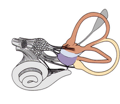
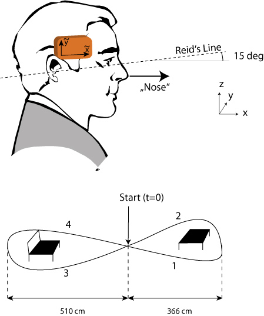
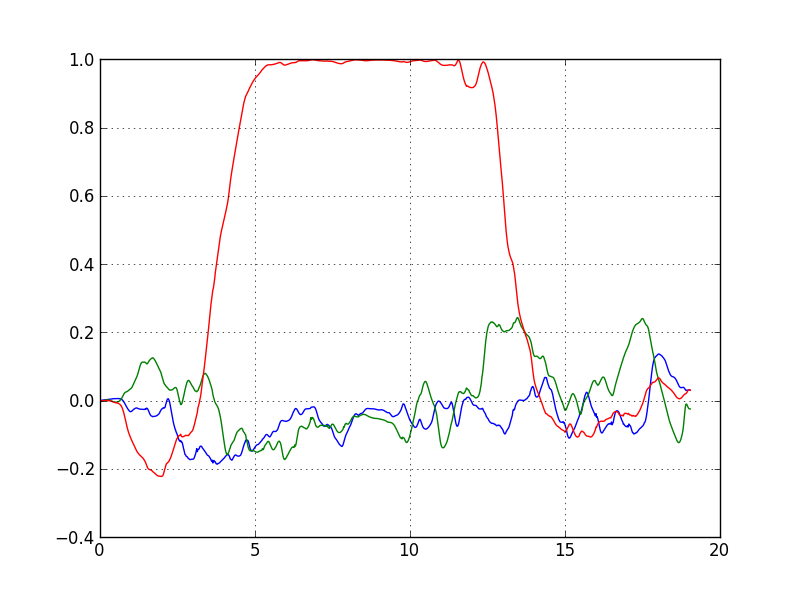
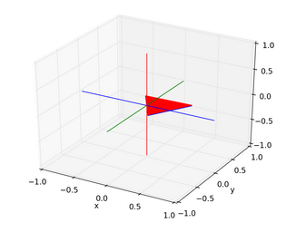

Background

The vestibular system is a sensory system that is critically important in humans for gaze and image stability as well as postural control. Patients with complete bilateral vestibular loss are severely disabled and experience a poor quality of life. There are very few effective treatment options for patients with no vestibular function. Over the last 10 years, rapid progress has been made in developing artificial 'vestibular implants' or 'prostheses', based on cochlear implant technology. As of 2019, 19 patients worldwide have received vestibular implants and the results are encouraging. Vestibular implants are now becoming part of an increasing effort to develop artificial, bionic sensory systems.
- Information about more recent progress with patients can be found in Milestones in the development of a vestibular implant. (Guyot JP, Perez Fornos A, Current Opinion in Neurology, 2019)
- A good technical summary is provided by Development of a multichannel vestibular prosthesis prototype by modification of a commercially available cochlear implant. (Valentin NS et al, IEEE Trans. Neural Systems and Rehab.Eng., 2013)
- Another good description of a CMOS neural-interface chip for a multichannel vestibular prosthesis that measures head motion and modulates vestibular nerve activity to restore vision-and posture-stabilizing reflexes is A CMOS Neural Interface for a Multichannel Vestibular Prosthesis (Hageman et al, IEEE Trans. Biomed. Circuits and Systems, Vol. 20, No. 2, 2016)
- Guinand, Nils et al. ,”Vestibular Implants: 8 Years of Experience with Electrical Stimulation of the Vestibular Nerve in 11 Patients with Bilateral Vestibular Loss”. ORL J Otorhinolaryngol Relat Spec, 77(4), 2015 Sep, p. 227-240
- ... and for easy reading: a Scientific American Article about vestibular intputs from Della Santina (2010).
Exercise: Simulation of a Vestibular Implant
Data
The files Walking_01.txt and Walking_02.txt
(which can be found in the folder MovementData
, in Ex_Vestibular.zip
) contain the linear accelerations and angular velocities
recorded when walking in a figure-of-eight, around a table
and a chair.
Methods
- For measuring the movement a sensor by XSens was used, with the orientation on the head as indicated in the figure below.
- At the start of the recordings, the subject was stationary, and the head was in an orientation with Reid's line 15 deg nose up.
- The sensor orientation on the head is such that at t=0, the "shortest rotation that aligns the y-axis of the sensor with gravity" brings the sensor into such an orientation that the (x/ -z / y) axes of the sensor aligns with the space-fixed (x/y/z) axes. This requirement uniquely determines the sensor-orientation at t=0.
- Data were sampled at 50 Hz.
- The acceleration data are given in m/s^2, the angular velocity data in rad/s .

Task 1: Simulate the vestibular neural response
Simulate the neural vestibular responses during walking,
using only the 3D-linear-acceleration and the
3D-angular-velocity from the file Walking_02.txt:
Right horizontal semicircular canal
Calculate the maximum cupular displacements (positive and negative). These two values should be written into the text fileCupularDisplacement.txt.
Otolith haircell
Assume that an otolith hair-cell has at t=0 the on-direction=[0 1 0] in space fixed coordinates (i.e. pointing to the left as seen from the subject). Calculate the minimum and maximum acceleration along this direction, in m/s^2, and write this value to the text fileMaxAcceleration.txt.Task 2: Calculate the "nose-direction" during the movement
Calculate the orientation of the "Nose"-vector (as
indicated in the figure) at the end of walking the loop
(for Walking_02.txt),
- based on the angular velocity recodings,
- and assuming that at t=0:
nose=[1,0,0].
Input data
The folder MovementData (in Ex_Vestibular.zip)
contains the following files:
Walking_01.txt, Walking_02.txt:Linear acceleration and angular velocity recordings from human subject while walking around.SCC_Humans.m:Orientations of the human semicircular canals, with respect to "Reid's plane". (Reid's plane is the plane defined by the lower rim of the orbia, and the center of the external auditory meatus. In "English": the bottom of the eyes, and the middle of the ears.)
Tips
Parameters and Results
- The radius of the human semicircular canals is 3.2 mm.
- For the given input, the magnitude of the cupular displacement is about +/- 0.1 mm.
- For the given input, the magnitude of the maximum acceleration along this axis is about +/- 6 m/s^2.
-
The quaternions describing the head orientation are shown below:

- The video
myNose.avishows the nose orientation during this walking loop:

Programming
- For Python implementations, use the package
scikit-kinematics.
General comments
- Name the main file
Ex2_Vestibular.py. - For submission of the exercises, please put all the
required code-files that you have written, as well as the
input- & data-files that are required by your program,
into one archive file. ("zip", "rar", or "7z".) Only
submit that one archive-file. Name the archive
Ex2_[Submitters_LastNames].[zip/rar/7z]. - Please write your programs in such a way that they run, without modifications, in the folder where they are extracted to from the archive. (In other words, please write them such that I don't have to modify them to make them run on my computer.) Provide the exact command that is required to run the program in the comment.
- Please comment your programs properly: write a program header; use intelligible variable names; provide comments on what the program is supposed to be doing; give the date, version number, and name(s) of the programmer(s).
- To submit the file, go to "Ex 2: Self-Grading".